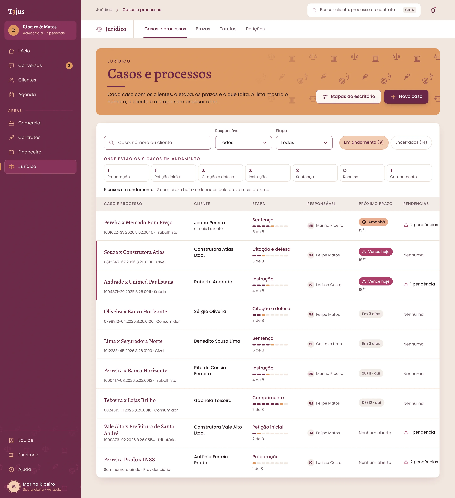

Lista de casos (sócia dona)
Busca, filtros de responsável e etapa, Em andamento e Encerrados. Cada linha: caso e número, cliente (com “e mais 1” quando há vários), etapa com a régua de 8, responsável, próximo prazo e pendências. Prazo de hoje ganha filete e selo escrito. “Etapas do escritório” só aparece para a sócia dona.
Abrir: juridico.html?estado=casos (estreite a janela para ver o celular)